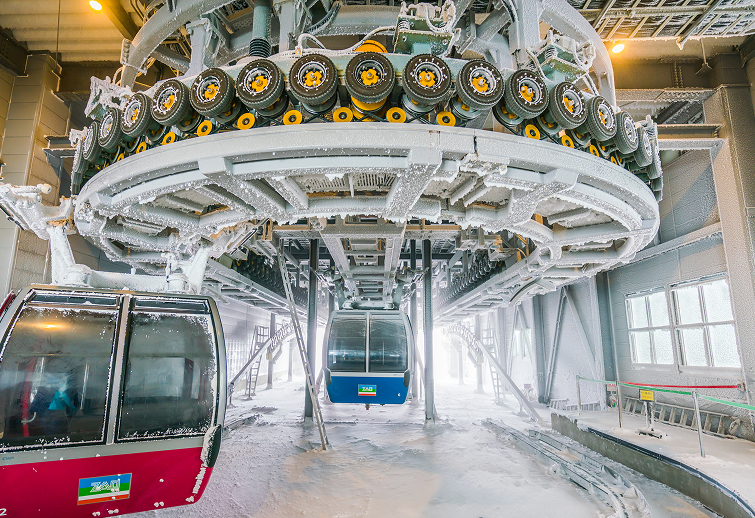
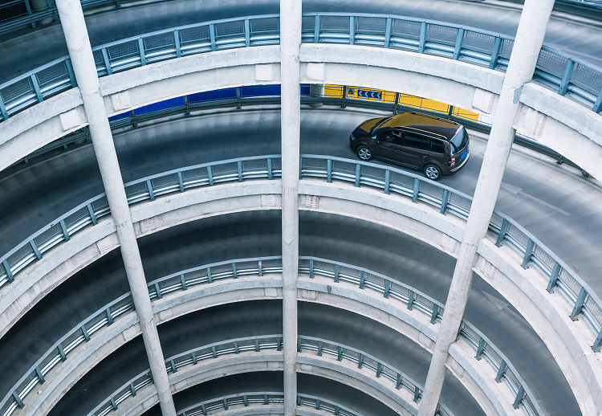
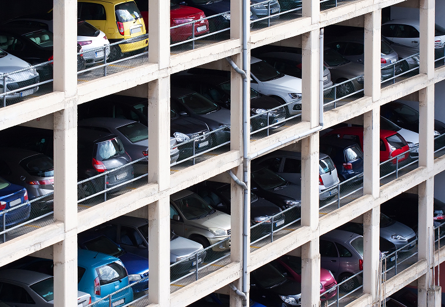
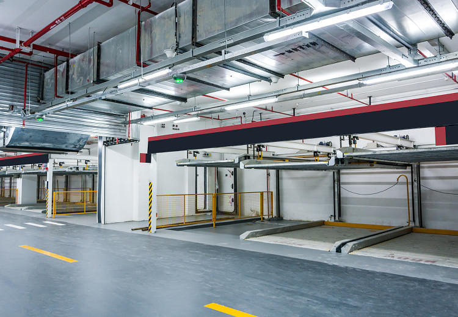
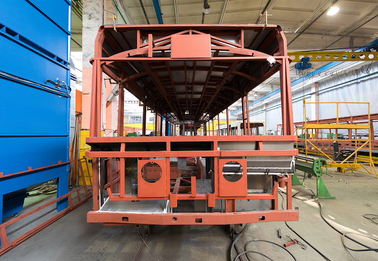
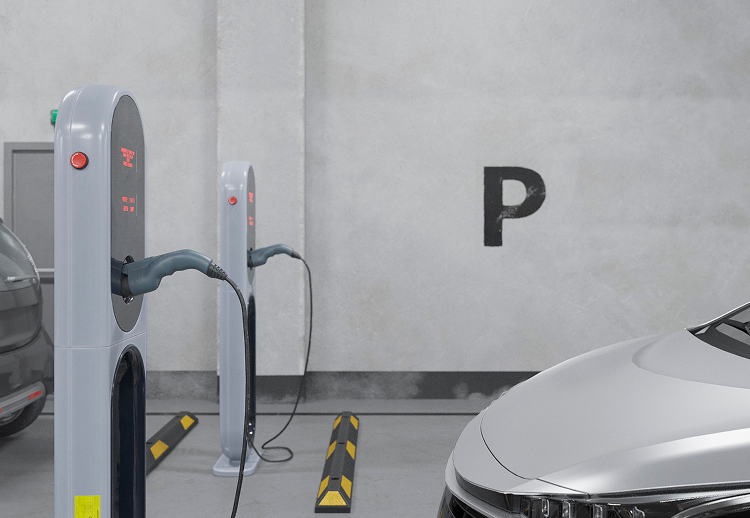

Автоматизированные системы парковки
Автоматизированные системы парковки – востребованные решения для размещения автомобилей на ограниченных городских территориях. Они помогают экономить пространство, повышать вместимость и обеспечивать удобный доступ к транспортным средствам. Каждая автоматическая парковка, спроектирована с учётом безопасности, надёжности и простоты эксплуатации.
Ниже представлены основные виды подобных конструкций, каждая из которых ориентирована на эффективное и комфортное использование парковочных зон. Благодаря продуманному механизму работы, автоматизированные системы парковки в целом решают задачу нехватки свободных мест, способствуют улучшению экологической обстановки и отвечают потребностям как частных, так и коммерческих объектов.

Роторные механические парковки
Занимая площадь примерно равную двум обычным машиноместам, такая парковка способна вмещать от 8 до 12 автомобилей. Вертикальное вращение обеспечивает высокий темп загрузки и выгрузки автомобилей, что особенно актуально при интенсивном трафике. Конструкция легко монтируется и при необходимости может быть перенесена на новую локацию.

Башенная (Вертикальная) автоматизированная система парковки
Это многоуровневая самонесущая конструкция, внутри которой размещён подъемный механизм лифтового типа. Он оснащён одно- или двухкоординатным манипулятором, перемещающим автомобиль на нужный уровень. С обеих сторон шахты расположены ряды ячеек для хранения авто на специальных поддонах.

Парковка пазл
Паркинг представляет собой металлическую конструкцию, состоящую из несущего каркаса и нескольких рядов мобильных парковочных платформ, расположенных максимум в шесть ярусов одна над другой на которых хранятся автомобили. В одном ряду на всех ярусах кроме последнего платформы отсутствуют, остается свободным пространство, для обеспечения возможности горизонтального перемещения соседних парковочных платформ.

Стеллажная механическая парковка
Эта парковочная система представляет собой многоуровневый стеллаж, расположенный в один или два ряда, где автомобили ставятся в ячейки на поддонах. Поддоны перемещаются подъёмными механизмами и манипуляторами (двух- или трёхкоординатными), которые могут располагаться ярусно и напольно.

Праковочный подъемник
Подъёмник – это двухуровневая конструкция с гидравлическим приводом, которая может оснащаться горизонтальной или наклонной платформой, а также иметь две или четыре стойки. Подобная двухуровневая компактная парковка помогает расположить два автомобиля на месте, которое обычно занимает одна машина.

Вспомогательные устройства
Передвижные платформы и поворотные столы разнообразных моделей – это механические изделия с индивидуальным приводом. Они позволяют перемещать или разворачивать автомобиль на ограниченной территории, облегчая заезд и выезд из парковочных отсеков.
Каждая автоматическая парковочная система, представленная на рынке, способствует экономному использованию пространства и повышению общей функциональности объекта. При выборе подходящего варианта важно учитывать тип автомобилей, условия эксплуатации и желаемую вместимость. Именно благодаря этому автоматическая парковочная система становится одним из ключевых инструментов для решения проблемы нехватки парковочных мест в современных городах.